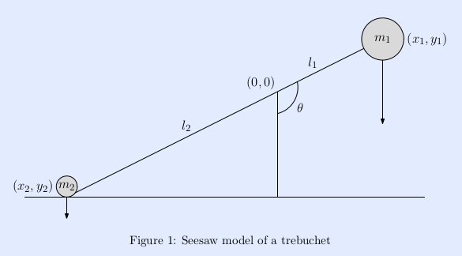
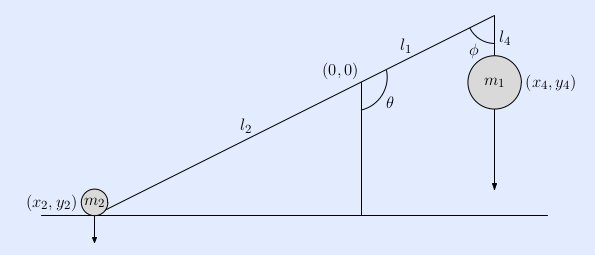
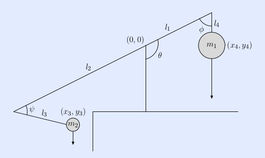

Using Python To Optimize a Trebuchet
Presenter
- Charles McCreary, P.E.
- Using Python to develop applications since 2000
- Scientific/Engineering applications
- Back office type applications
- Django web apps
- CRM Engineering Services
Why?
- I wanted a demonstration project to verify that we could replace MathCad with the ipython notebook
- It would be fun
Trebuchets and medieval siege weapons
A trebuchet is a medieval siege weapon that combines two ancient weapons, the traction catapult and the sling, into one. A trebuchet consists of a beam mounted on an axle with a heavy counterweight mounted on the short end and a sling attached to the long end.
Essentially it is a triple pendulum:
- A hinge at the counterweight pendulum and beam
- A hinge at the axle
- A hinge at the sling and beam
Trebuchets and medieval siege weapons
Or not so medieval

Mechanics of a Trebuchet
I have borrowed heavily from
See-saw Idealization
Hinged Counterweight Idealization
Hinged Counterweight with Sling Idealization
Tool Chain
- Python
- sympy - 0.7.1-git https://github.com/sympy/sympy
- ipython - 0.13+ https://github.com/ipython/ipython.git
- numpy
- scipy
- jinja2
- Abaqus - a general purpose finite element analysis program ($$$)
Mechanics of the see-saw
Mechanics of the hinged counterweight
Mechanics of the hinged counterweight with sling
Optimization using Scipy
Calculation of range
\begin{equation*}
\psi(r) = e^{-2r}
\end{equation*}
\begin{equation*}
\begin{eqnarray}
y & = & ax^2 + bx + c \\
f(x) & = & x^2 + 2xy + y^2
\end{eqnarray}
\end{equation*}
Abaqus finite element simulation
Range vs Variable Permutations
numpy and scipy - The Good
- Indispensable
numpy and scipy - Needs Work
- Not smart enough to critique!
ipython notebook - The Good
- So far, it has completely replaced MathCad
ipython notebook - Needs Work
- If running on a server, how do you import an image if not on server?
sympy - The Good
- Suits our needs better than MathCad
sympy - Needs Work
- Not quite Mathematica
- sympy.physics units
- Always reduces to base units
\begin{equation*}
N = \frac{m}{s^2}kg
\end{equation*}
sympy - Needs Work
At present, there does not seem to be a very good way to convert the symbolic results to python code
- Can convert to Fortran or C
- Thus cannot feed directly into scipy diffeq solvers. You must copy and paste.